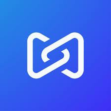
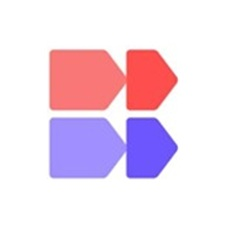

Summary
- Product Designer: Product and interaction design since 2015. Hands-on designer. I own the products I work on at Perforce, and did the same at Budibase and Dawson Andrews.
- Shipped output: I design and ship production front-end code. At Perforce, feature output was still 25% higher after the front-end team was cut from six to two. At CityFibre, homepage work put 90% more people onto the buying journey.
- Growth Mindset: Highly coachable. Shaped by years of martial arts training and coaching.
- Witty & Down-to-Earth: Extraverted culture builder who organises team socials and likes talking to real people.
Experience

Product Designer
September 2025 - today
Perforce P4 Plan and P4 DAM: planning and digital asset management software for games and media.
- I own product design for P4 DAM and P4 Plan. Customers include Electronic Arts, Pinewood Studios, Xbox Game Studios and Meta. That work has directly helped sell multiple new customers onto Perforce.
- Front-end capacity was cut from six developers to two. The product still shipped 25% more features per quarter. Clarification questions dropped about 50%, and planning meetings went from about an hour to about 30 minutes.
- I design and ship production front-end with Claude Code. Shipped multiple AI-enabled features, designed for how people and AI agents use the product. Built reusable Claude workflows other teams now use. Won Best Designed at the company AI hackathon in 2026.

Product Designer
July 2024 - July 2025
Budibase Open-source low-code for internal apps, automations and AI agents.
- I owned product design for Budibase as a whole, including how teams connect their own data, databases and APIs.
- I rebuilt the automations builder, created new filter systems, and set up key workflows. I ran a paid study with 25 users, changed the design, and support complaints dropped from about ten at a time to none.
- That work became the foundation for Budibase’s later AI product: agents and automations on a platform people already used.
Product Designer
June 2021 - July 2024
Dawson Andrews Product design agency.
- Shipped work for GSMA, GAA, CityFibre, startups and public sector organisations.
- Lead product designer for CityFibre (about 2,000 people). Designed the B2B portal ISPs use to book engineers for home fibre surveys. Ran a workshop with 40+ people from Vodafone, TalkTalk and Zen, captured 1,400+ data points, and user satisfaction doubled after.
- Also designed the CityFibre marketing website. 90% more people clicked through to check fibre availability versus three months earlier. That product direction helped Dawson Andrews win Hyperoptic, hire five more people, and grow from a small startup agency into a medium-sized one.
More experience on linkedin.com/in/benturnerwork.
Skills
Product & UX Design: Product ownership, Interaction design, Design systems, Tokens, Information architecture, Usability testing, Accessibility (WCAG / AA), Systems thinking, First principles, Product sense, High agency, Data-driven UX.
Frontend: Production code, Near-production prototypes, CSS, Tailwind CSS, HTML, Git, Component-driven development.
AI: Cursor, Claude Code, Claude skills, Figma Make, Agentic workflows, Designing for agents, Human-in-the-loop UI, Encoding design systems for AI, Research synthesis, AI-assisted prototyping and implementation.
Tools: Figma, Maze, Jira, Local development environments.
Hobbies
Martial arts since 2007, over 18 years: BJJ purple belt, Japanese Jiu-Jitsu black belt, and Judo green belt. Also Warhammer 30k, the gym, fishkeeping, karting, travel, and dogs, especially fluffy ones.
Education
BDes (Hons) Interaction Design, Ulster University, First Class Honours (2017 to 2021)
Extended Diploma in Interactive Media, Northern Regional College. Distinction*, Distinction*, Distinction (2015 to 2017)